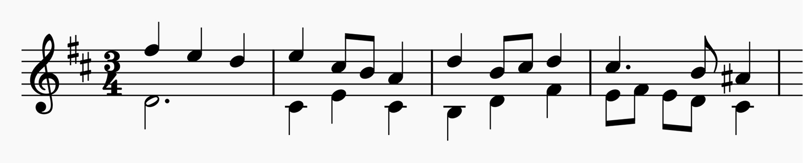
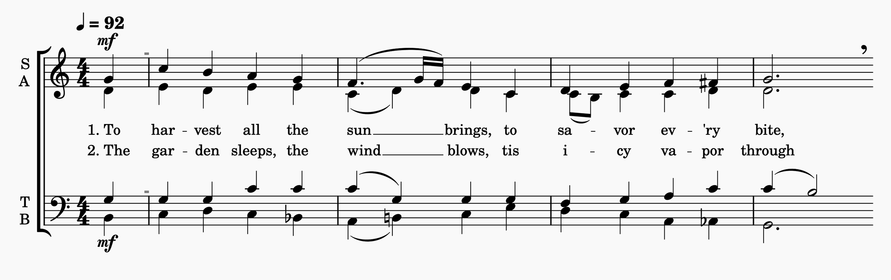
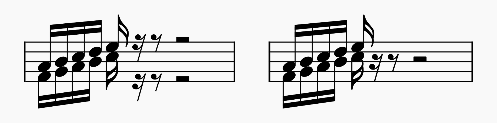
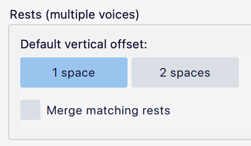

使用多个声部
概述
在记谱法中，声部（voice）是谱表上的一条独立音乐线条。可以在同一条谱表上记写多个声部，各声部拥有独立的节奏。同一谱表上的两个声部通常用相反的符干来表示——上方声部符干朝上，下方声部符干朝下：

在两条谱表上的四声部 SATB 编配中，上方谱表使用声部 1 和 2 记写女高音与女低音，下方谱表使用声部 1 和 2 记写男高音与男低音：

开始音符输入时的默认声部是声部 1。需要第二个声部时，通常是声部 2。声部 3 和 4 较少使用，但在复杂的复调音乐中或密集键盘织体的内声部中有时是必需的。
在多声部中输入音乐
无论你处于哪个声部，输入音符和休止符的原则都是一样的（参见 输入音符与休止符）。
每个声部在界面中都有自己的颜色。音符输入光标会改变颜色以反映当前声部；选中音符、休止符（以及许多其他对象）时，它们会以各自声部的颜色高亮显示。这在输入和编辑时很有用，能让你立刻看到音乐所属声部的视觉指示。
你可以在 编辑→偏好设置→高级 中更改每个声部的颜色。
在音符输入模式下，你可以通过单击顶部工具栏中的声部选择按钮切换到不同声部：

你也可以使用快捷键 Ctrl+Alt+1–4。
默认情况下，工具栏中只显示声部 1 和 2 的按钮。要使用其他声部，先单击工具栏中的 
如果你在进入音符输入模式之前选中了一个音符或休止符，你将以与该音符或休止符相同的声部进入音符输入模式。
在多声部中编辑音乐
在声部之间移动音符
要把音符或休止符移动到另一个声部：
- 选中你要移动的音符（可以单个选择，也可以按列表或范围选择）。
- 单击你希望移入声部的按钮。
你也可以使用快捷键 Ctrl+Alt+1–4（Win）或 Cmd+Alt+1–4（Mac）。
你可以把任意数量的音符（甚至一次从多个声部）移入一个声部。如果同一位置、同一节奏已有音符，它们会合并成和弦。如果节奏不同，部分音符可能会留在原声部，因为 MuseScore Studio 无法判断你的意图。
交换声部
通过选择 工具→声部 中的选项（例如 交换声部 1-2），可以交换任意两个声部的音乐。此功能仅对范围选择有效，并且只对完整小节（或连续多个小节）有效。如果范围内只包含小节的一部分，整个小节都会被交换。
调整休止符
通常需要移除次要声部中多余的休止符。有两种方法：
- 隐藏休止符：选中它，然后在 属性 中取消勾选 可见（或使用快捷键 V）。
- 删除休止符：选中它，然后按 Del。
声部 1 是“基准”声部，必须保持节奏完整。因此，声部 1 中的休止符只能隐藏，不能删除。
在单个声部中，休止符出现在谱表中间；而在多个声部中，声部 1 的休止符至少上移一个间，声部 2 的休止符至少下移一个间。这种偏移有助于显示它们属于哪个声部。实际上，它们通常会被移到更靠外的位置，以避免与其他声部的记谱发生碰撞。
当多个声部中同时出现相同时值的休止符时，MuseScore Studio 可以自动将它们合并：

未合并（左）与已合并（右）的休止符
多声部中休止符的行为可以通过 格式→样式→休止符 中的以下选项控制：

- 默认垂直偏移： 选择多声部中休止符的初始位移为 1 个间还是 2 个间。
- 合并相同休止符： 合并多个声部中同时出现的相同时值休止符（见上图）。
这些选项会影响乐谱中的所有谱表。如果只想为特定谱表开启或关闭休止符合并，可以通过 谱表/分谱属性 实现：
- 右键单击谱表，从菜单中选择 谱表/分谱属性。
- 将 合并相同休止符 改为 开 或 关。默认值 自动 会遵循整份乐谱的设置。
“合并”的休止符实际上是叠放在一起的，但它们都仍然存在。如果你想在特定位置看到多个休止符，可以通过手动移动它们来实现。